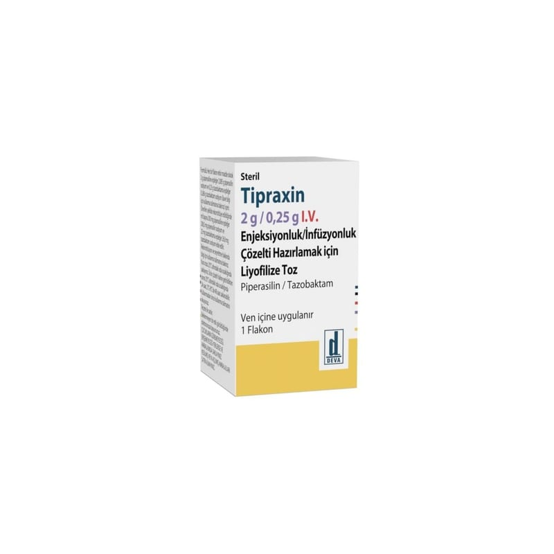

Tipraxin 2 g / 0.25 g IV Enjeksiyonluk/İnfüzyonluk Çözelti Hazırlamak İçin Liyofilize Toz, 1 Flakon

Ne için kullanılır
KT · Bölüm 1 TİPRAXİN, piperasilin ve tazobaktam içerir. Piperasilin geniş spektrumlu penisilin antibiyotikleri olarak bilinen ve birçok bakteri türünü öldürebilen bir gruba dahildir. Tazobaktam, bazı bakterilerin piperasilinin etkilerine direnç geliştirmesini önler. Piperasilin tarafından öldürülemeyen bazı bakteriler piperasilin ve tazobaktam birlikte verildiğinde öldürülebilir. TİPRAXİN 2,25 g steril, beyaz/beyaza yakın renkte liyofilize toz içeren flakonda sunulan bir antibiyotiktir.
Bu ilacı kullanmaya başlamadan önce bu kullanma talimatını dikkatlice okuyunuz, çünkü sizin için önemli bilgiler içermektedir. u anma talimatını saklayınız. Daha sonra tekrar okumaya ihtiyaç duyabilirsiniz. Eğer ilave sorularınız olursa, lütfen doktorunuza veya eczacınıza danışınız. Bu ilaç kişisel olarak size reçetelendirilmiştir, başkalarına vermeyiniz. Bu ilacın kullanımı sırasında, doktora veya hastaneye gittiğinizde bu ilacı kullandığınızı doktorunuza söyleyiniz. Bu talimatta yazılanlara aynen uyunuz. İlaç hakkında size önerilen dozun dışında yüks veya düşük doz kullanmayınız.
Yetişkinlerde ve 12 yaşın üzerindeki çocuklarda TİPRAXİN, göğüs boşluğu (akciğerler), idrar yolu (böbrekler ve idrar kesesi), kan, karın içi veya deri gibi vücut bölgelerini etkileyen bakteriyel enfeksiyonların tedavisinde kullanılır. TİPRAXİN, kanındaki beyaz kan hücresi sayısı düşük olan hastalarda (bu durum enfeksiyonlara karşı direncin düşük olmasına yol açar) bakteriyel enfeksiyonların tedavisinde kullanılabilir. 2-12 yaş arası çocuklarda TİPRAXİN, apandisit, karın zarı iltihabı, safra kesesi iltihabı gibi karın içi enfeksiyonlarının tedavisinde kullanılır. TİPRAXİN, kanındaki beyaz kan hücresi sayısı düşük olan çocuk hastalarda (bu durum enfeksiyonlara karşı direncin düşük olmasına yol açar) bakteriyel enfeksiyonların tedavisinde kullanılabilir.
Bazı ciddi enfeksiyonlarda, doktorunuz TİPRAXİN ile başka bir antibiyotik ilaci birlikte uygulayabilir.
2. TİPRAXİN’i kullanmadan önce dikkat edilmesi gerekenler TİPRAXİN’i aşağıdaki durumlarda KULLANMAYINIZ Eğer piperasilin veya tazobaktam veya TİPRAXİN içindeki herhangi bir yardımcı maddeye karşı alerjikseniz.
Eğer beta-laktamlar (penisilinler ve sefalosporinler dahil) ya da diğer bazı antibiyotiklere (β- laktamaz inhibitörleri gibi) karşı duyarlı (alerjik) iseniz
TİPRAXİN’i aşağıdaki durumlarda DİKKATLİ KULLANINIZ Alerjileriniz olması halinde TİPRAXİN kullanmadan önce bu durumu doktorunuza veya eczacınıza söylediğinizden emin olunuz. Tedavinizden önce ishal durumunuz var ise veya tedavi sırasında ya da sonrasında ishal gelişti ise hemen doktorunuza veya eczacınıza bildiriniz. Doktorunuza danışmadan ishal için herhangi bir ilaç almayınız. Düşük potasyum düzeyi olan hastalarda düzenli elektrolit tespitleri yapılmalıdır. Doktorunuz, ilacı kullanmaya başlamadan önce böbrek fonksiyonlarınızı kontrol etmek ve tedavi süresince düzenli olarak kan testleri isteyebilir. Böbrek veya karaciğer probleminiz varsa veya hemodiyaliz alıyorsanız doktorunuz bu ilacı kullanmadan önce karaciğerinizi kontrol etmek isteyebilir ve tedaviniz süresince düzenli kan tahlili uygulayabilir. Artan kan pıhtılaşmasını engellemek için bazı ilaçlar (antikoagülan adı verilen) kullanıyorsanız veya tedaviniz sırasında beklenmedik bir kanama görülürse hemen doktorunuzu veya eczacınızı bilgilendiriniz. Tedavi sırasında havale geçirirseniz bu durumu doktorunuza veya eczacınıza söyleyiniz. Sizde yeni bir enfeksiyon geliştiğinden veya enfeksiyonunuzun kötüye gittiğinden şüpheleniyorsanız doktorunuza veya eczacınıza söyleyiniz.
Bu uyarılar geçmişteki herhangi bir dönemde dahi olsa sizin için geçerliyse lütfen doktorunuza danışınız.
Güvenlilik ve etkililik çalışmaları yetersiz olduğundan TİPRAXİN’in 2 yaşından küçük çocuklarda kullanımı önerilmemektedir.
TİPRAXİN’in yiyecek ve içecek ile kullanılması Kullanım yolu nedeniyle yiyecek ve içeceklerle kullanılması üzerine veri bulunmamaktadır.
Hamilelik İlacı kullanmadan önce doktorunuza veya eczacınıza danışınız.
Hamileyseniz ya da emziriyorsanız, hamile olduğunuzu düşünüyorsanız veya hamile kalmaya çalışıyorsanız; TİPRAXİN kullanmaya başlamadan önce doktorunuza danışınız. Doktorunuz TİPRAXİN’in size uygun olup olmadığına karar verecektir.
Tedaviniz sırasında hamile olduğunuzu fark ederseniz hemen doktorunuza veya eczacınıza danışınız.
Emzirme İlacı kullanmadan önce doktorunuza veya eczacınıza danışınız.
Piperasilin ve tazobaktam rahimden veya anne sütü ile bebeğe geçer. Emziren kadınlarda, yalnızca yararı hasta ve bebeğe olan riskten daha fazla ise kullanılmalıdır. Buna doktorunuz karar verecektir.
Araç ve makine kullanımı Araba ve diğer makine çeşitlerini kullanma yeteneği üzerine etkisi bulunmamaktadır.
TİPRAXİN’in içeriğinde bulunan bazı yardımcı maddeler hakkında önemli bilgiler Bu ilaç piperasilin sodyum ve tazobaktam sodyum etkin maddelerinden dolayı, her bir flakon başına 108 mg (ya da 4,7 mmol) sodyum (ana yemek bileşeni/sofra tuzu) içerir. Bu, erişkin için önerilen günlük maksimum diyetle sodyum alım miktarının %5,4’üne eşdeğerdir.
Diğer ilaçlar ile birlikte kullanımı Bazı ilaçlar TİPRAXİN ile etkileşime girebilir. Bunlar, Probenesid (gut hastalığı tedavisinde kullanılır). Bu ilaç TİPRAXİN’in vücuttan atılma süresini uzatabilir. Heparin, varfarin ve aspirin gibi kan sulandırıcı veya kan pıhtılaşmasını iyileştiren ilaçlar
Ameliyat sırasında kaslarınızın gevşemesi için kullanılan ilaçlar. Genel anestezik alacaksanız doktorunuzu bilgilendiriniz. Metotreksat (kanser, artrit ve sedef hastalığı tedavisinde kullanılır) içeren ilaçlar. TİPRAXİN metotreksatın vücuttan atılma süresini uzatabilir. Kanınızdaki potasyum seviyesini düşüren ilaçlar (örn. idrar sökücü tabletler veya kanser ilaçları) Tobramisin, gentamisin içeren diğer antibiyotik ilaçlar. Böbrek probleminiz var ise doktorunuza söyleyiniz. Vankomisin içeren ilaçlar. TİPRAXİN ile birlikte kullanımı akut böbrek yetmezliği ile ilişkili olabilir.
Laboratuvar testleri üzerindeki etkisi Kan veya idrar örneği vermeniz gerekiyorsa doktorunuza veya eczacınıza TİPRAXİN kullandığınızı söyleyiniz.
TİPRAXİN LAKTATLI RİNGER ÇÖZELTİLERİ İLE GEÇİMSİZDİR.
Eğer reçeteli ya da reçetesiz herhangi bir ilacı şu anda kullanıyorsanız veya son zamanlarda kullandınız ise lütfen doktorunuza veya eczacınıza bunlar hakkında bilgi veriniz.